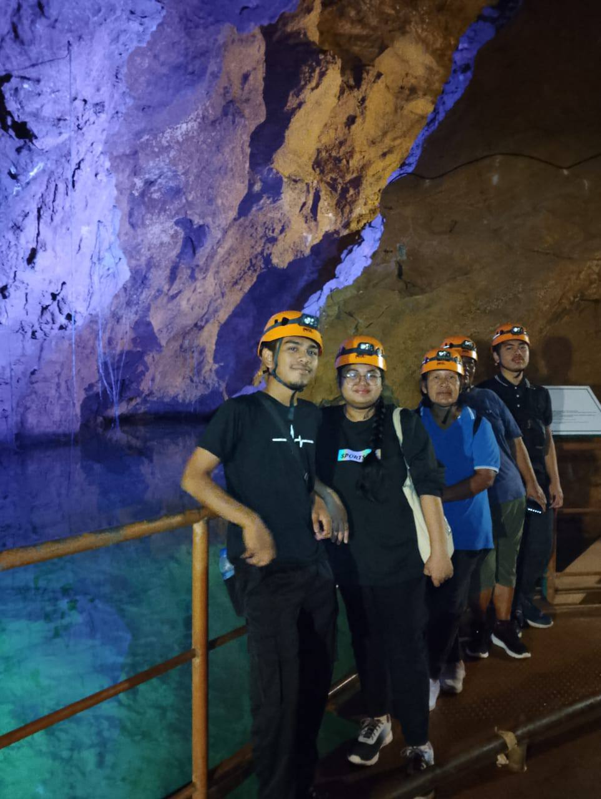
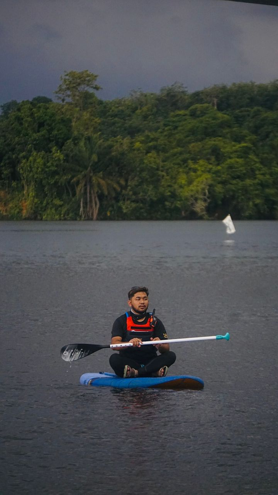
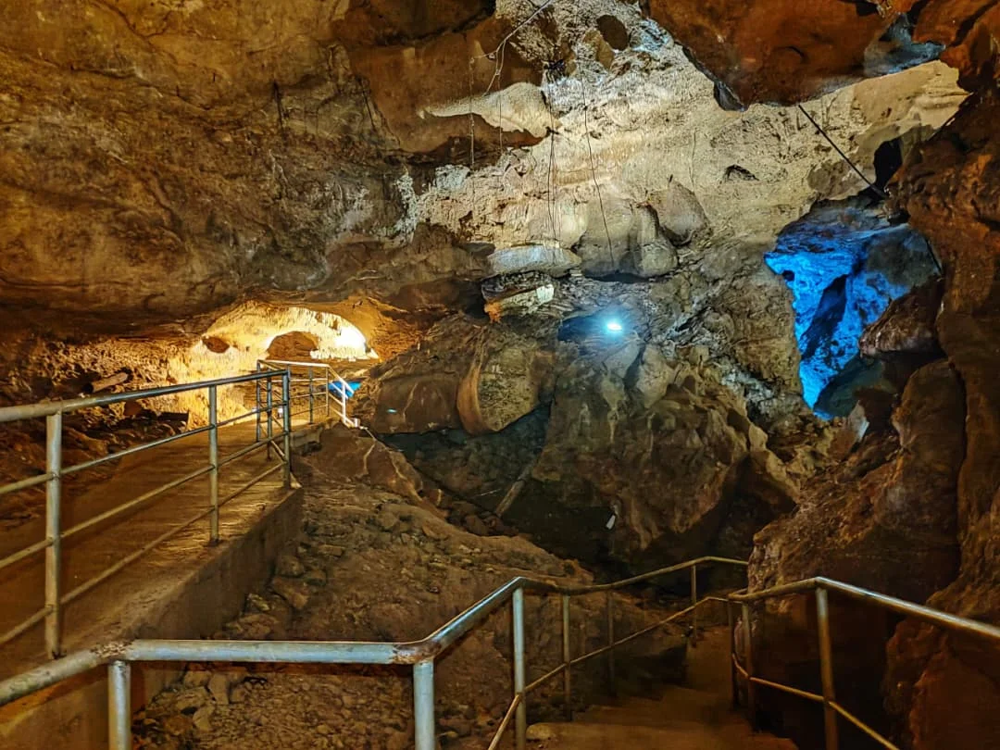
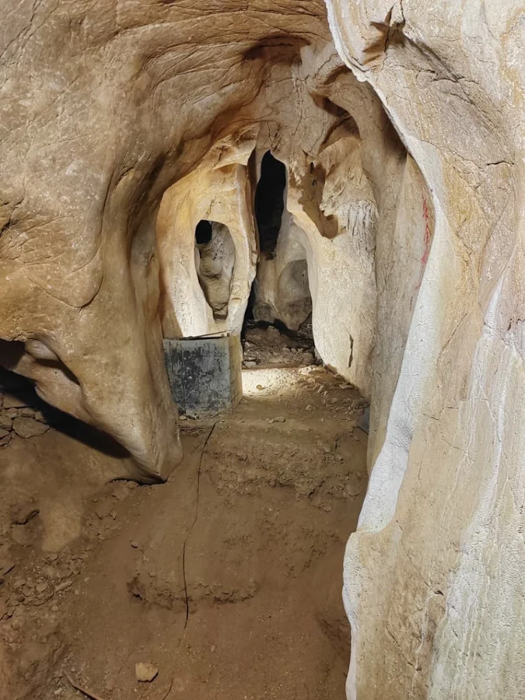

🌿 Nature Explorer | Adventure Crew | Outdoor Enthusiast
-WELCOME-
The Journey of Syafiq
Welcome to Muhammad Syafiq's personal website. This website tells about his interests, experiences, achievements and hopes in adventure activities after serving as an adventure crew at ClubRock company.

Dare to explore. - Syafiq

Introduction

Muhammad Syafiq is an individual who is highly enthusiastic in
extreme activities such as hiking, rock climbing and cave exploration.
Originally from Kedah and educated at Arau Vocational College, he is active in the
Adventure Crew and always looks for opportunities to explore the beauty of nature.
Therefore, he wants to pursue his interest by joining the Eco-Adventure Hub by ClubRock
team as a career in his current life.
With experience in various expeditions including the exploration of more than 400 caves
and involvement in flood relief missions, he not only builds self-resilience but also
contributes to society. His deep interest in the outdoor world makes him an inspiration
to young people to dare to try new things.
Eco-Adventure Hub by ClubRock



